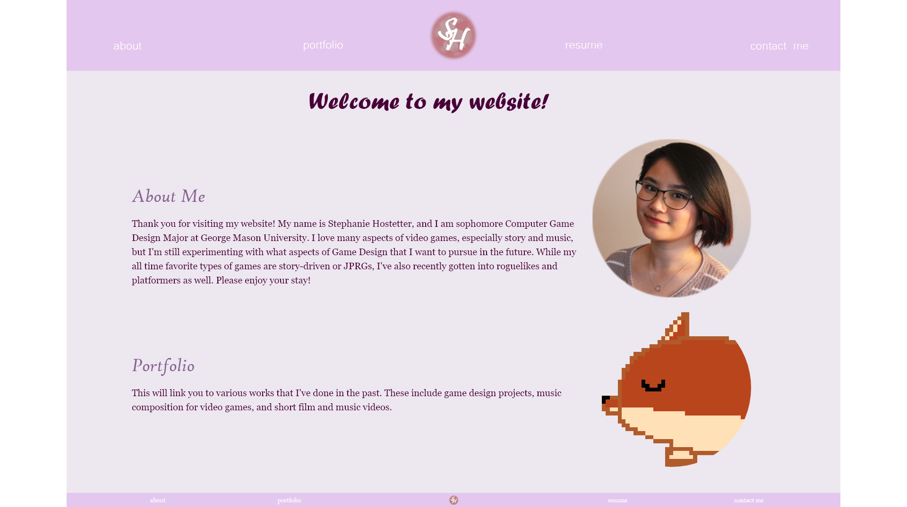
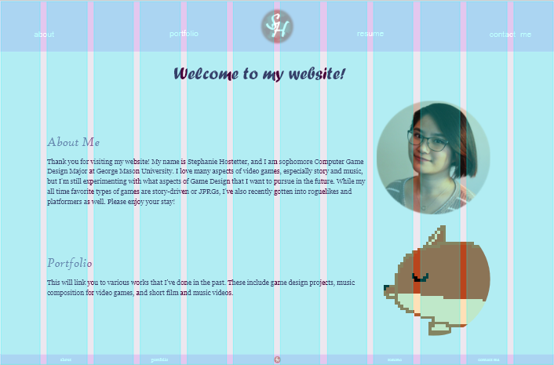
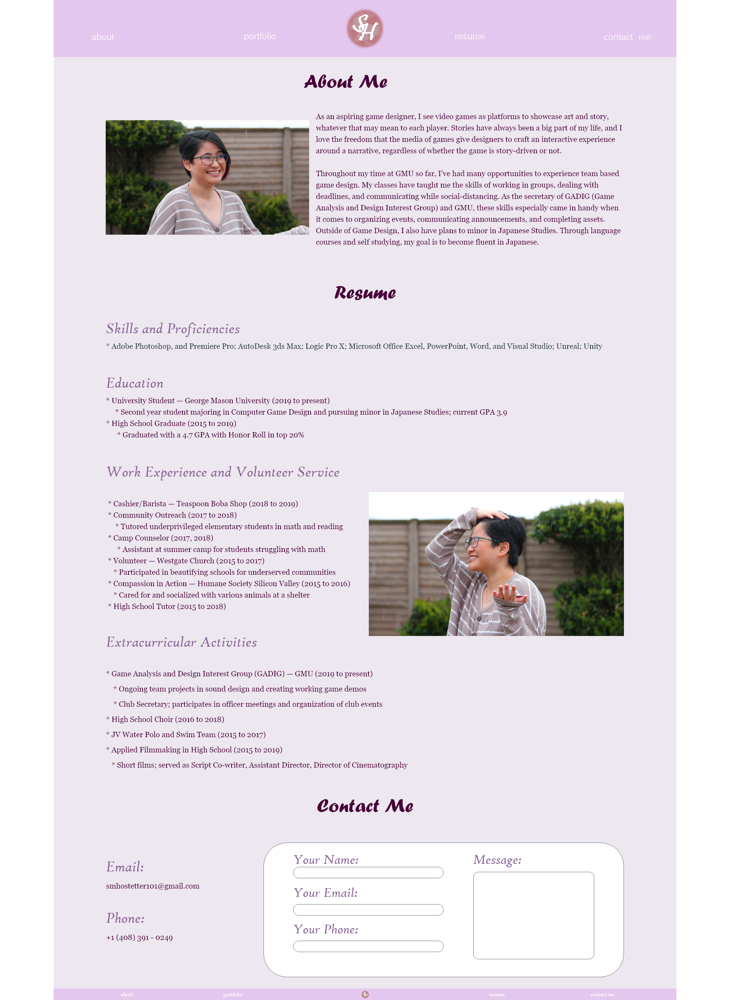
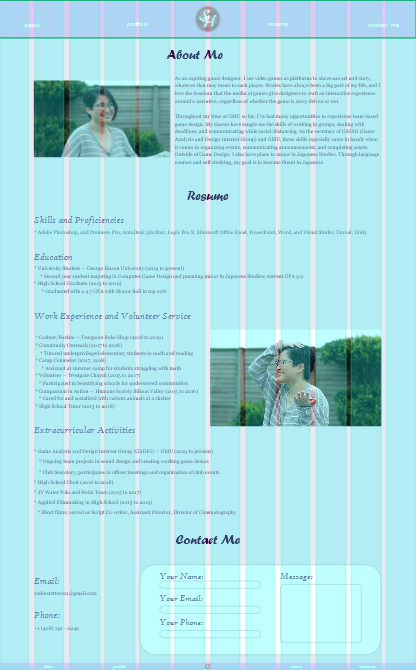
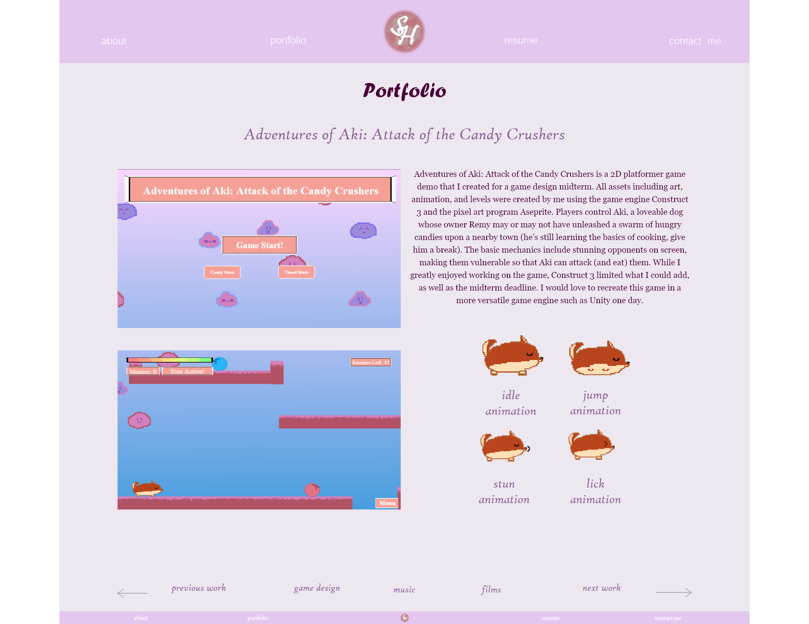
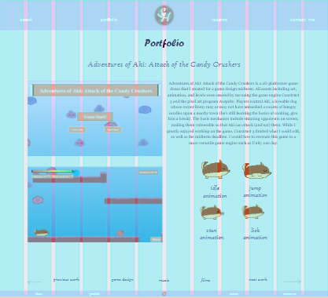

This is the revised version of my first mockup idea. While I still prefer the second idea, I think that this version of the first mockup improved a lot from the initial design.
The home page is simplistic, but I think it works for this version of the mockup. The image for the portfolio is from one of the games I've worked on, but I may replace it with something else in the future (though I will likely be going with the other mockup idea).
 The about me page has been improved a lot with images, my resume, and a contact me section at the bottom. I added the second picture in the resume section since there seemed to be a lot of empty space, but it feels semi out of place and I might just center align all the text for the resume instead.
 The portfolio page now has images as well! The dog gifs (bottom right) will animate in the eventual web version. This version of the portfolio page might be a bit too cramped. My idea for the portfolio navigation at the bottom would be that each piece has its own page and category. The back and next pages will take you between pieces of each category, and the three category buttons would take you between the different categories, starting you on the first piece of the category. Hope this makes sense! I might workshop the layout of this for the final revision.
 